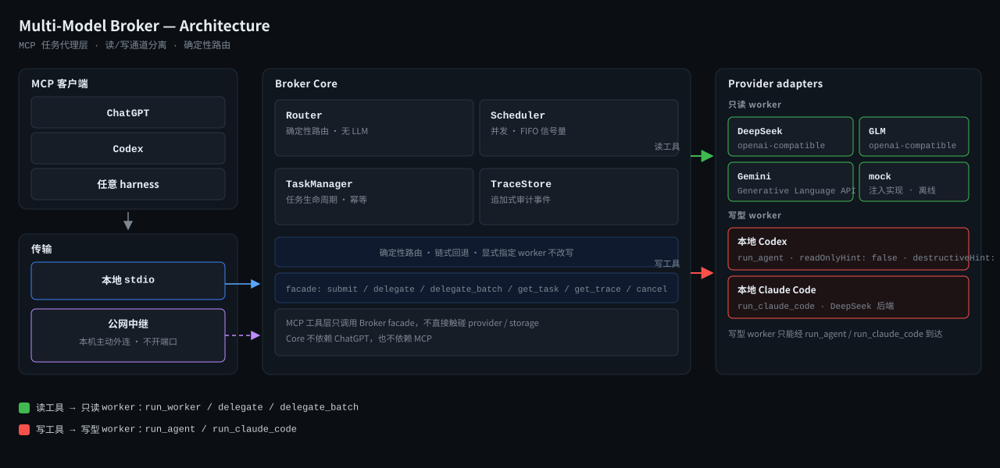

一个面向 MCP 的多模型任务代理层：MCP 客户端（ChatGPT、Codex 或任何 harness）把任务交给它， 它按能力路由到本机或云端的多个 worker（本地 Codex、本地 Claude Code、DeepSeek、GLM、Gemini、mock）， 返回统一结构的结果并留下可审计的 trace。读/写能力严格分离，写型 worker 只能经各自的写工具到达。
把「用哪个模型、交给本机还是云端、怎么回收结果、怎么留痕」这些决策从客户端里抽出来，收敛到一处。 客户端只按统一结构提交任务，Broker 负责路由、并发、幂等、超时与审计；读路径和写路径分开， 写盘只能通过明确标注的写工具触发。它不替代任何模型，只在模型之上加一层可验证的调度与隔离。
stdio 接入本地 harness；Streamable HTTP（回环 + 共享密钥，可选 SSE 应答）供网络侧客户端使用。
按 requirements + 能力声明选择 worker，链式回退；显式指定 worker 永不被改写，无需 LLM 参与路由。
waitMs 内阻塞返回；超时返回 taskId 用 get_task 轮询。每 worker 并发上限 + 全局上限。
idempotencyKey 去重，重复提交只等待不重跑，避免二次计费。
每次委派记录 goal、路由原因、provider/model、时间、工具事件、用量与错误。
只读工具拒绝写型 adapter；写型 worker 只能经写工具到达，并标注 readOnlyHint: false。
relay 子命令让本机主动外连自建中继（Cloudflare Worker + Durable Object），无需开放入站端口。
codex-sdk 与 claude-code adapter；claude-code 后端可换成任意 Anthropic 兼容端点（默认 DeepSeek）。
客户端经本地 stdio 或公网中继进入 Broker Core，Core 把读工具路由到只读 worker、把写工具路由到写型 worker。

依赖 Node.js ≥ 22.5（使用内置 node:sqlite，无需原生模块与构建工具链）。
npm ci npm run check && npm test && npm run build node dist/cli/index.js doctor
node dist/cli/index.js mcp-stdio \ --profile local-full
node dist/cli/index.js mcp-http \ --profile chatgpt-pro-readonly \ --token-env BROKER_HTTP_TOKEN \ --port 8789
MCP 面共 10 个注册工具，三种 profile 分别暴露 7 / 9 / 8 个；只读与写型分开标注。
| 工具 | 类型 | 说明 |
|---|---|---|
| ping | 只读 | Broker 健康探测 |
| list_workers | 只读 | 列出已配置 worker 及其能力与健康状态 |
| run_worker | 只读 | 路由到某个只读 worker 执行，拒绝写型 adapter |
| run_agent | 写型 | 驱动本地 Codex agent（可写允许清单工作区），readOnlyHint: false · destructiveHint: true |
| run_claude_code | 写型 | 驱动本地 Claude Code（DeepSeek 后端），readOnlyHint: false · destructiveHint: true |
| delegate | 只读 | 单任务委派，拒绝写型 adapter |
| delegate_batch | 只读 | 一次最多 8 个任务并行，部分失败也保留结果 |
| get_task | 只读 | 按 taskId 轮询长任务结果 |
| get_trace | 只读 | 读取某次委派的审计 trace |
| cancel_task | 只读 | 取消排队/运行中的任务（本地运维工具，默认不下发给远程客户端） |
2026-09-17 在本机（WSL2 + AMD Radeon 780M iGPU，无 CUDA）实测，仅作量级参考。
| 路径 | 实测 | 说明 |
|---|---|---|
| 直连 API 单次最小任务 | ≈ $0.00007 | 35 in / 50 out，deepseek-flash |
| 本地 Claude Code harness 单次 | $0.0002 – 0.005 | 每轮约 24k tokens 系统提示 + 工具 schema，多由前缀缓存承担 |
| 余额差法校准 | 6 次共 ¥0.01（≈ $0.00024/次） | 唯一权威口径（GET /user/balance） |
| 一次真实写文件验收 | 3 – 4 秒 / 估算 $0.00038 – 0.00096 | 磁盘 sha256 核对；turns = 2 |
写盘与出网默认收紧，需要本地显式开启。